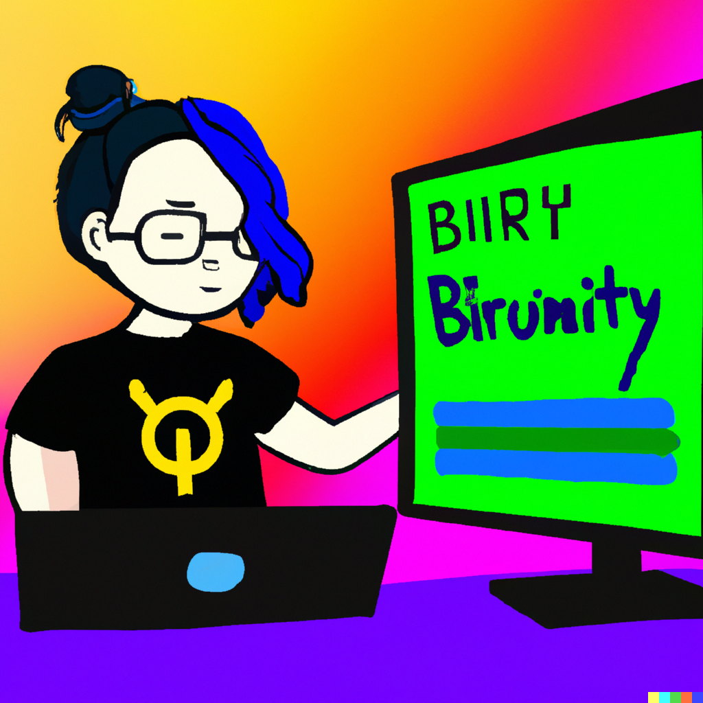
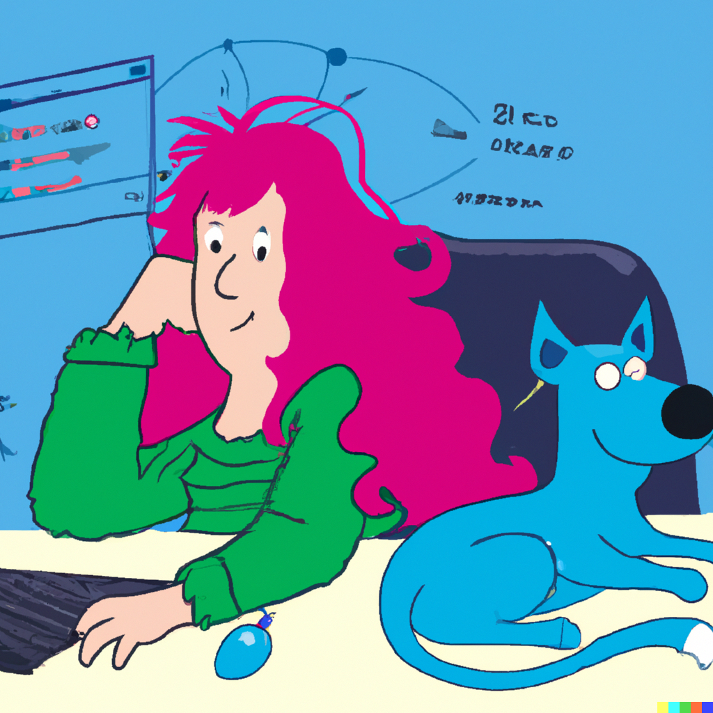
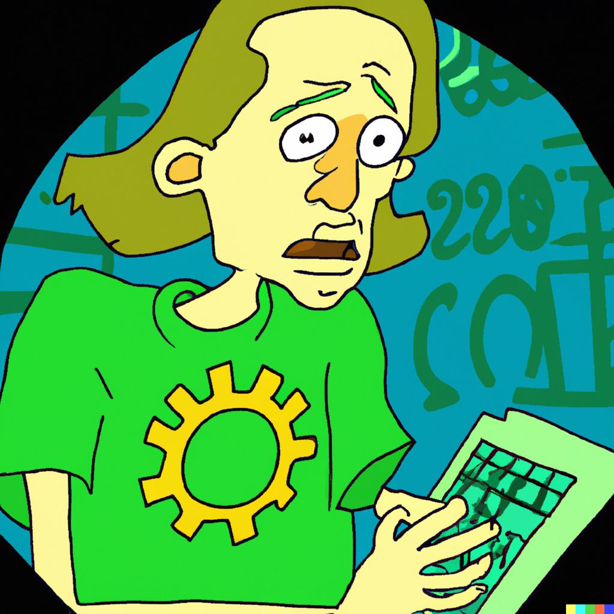
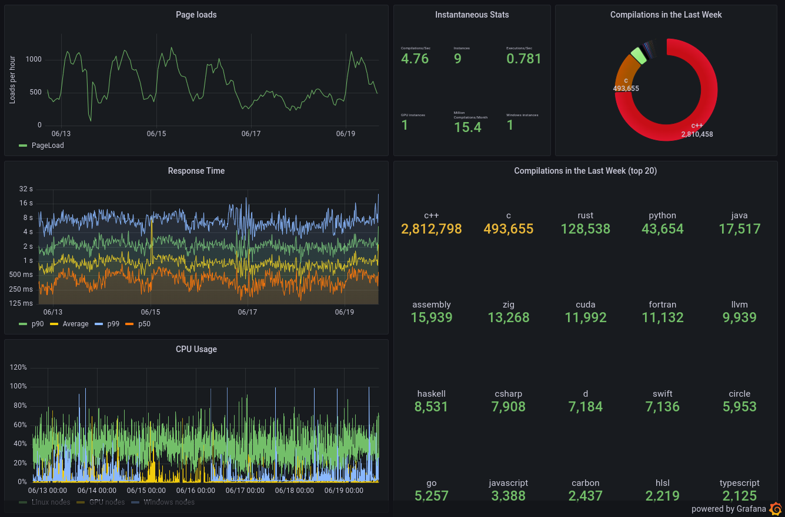

Quick fire questions
What?
Why?
When?
22nd March 2012

2012
- gcc & clang
- C++
- Unfiltered
- 5k lines of JavaScript
- Just me!
- Self-funded
2023
- 2,100+ compilers
- 50+ languages
- Filters, tools, diffs...
- 65k lines of TypeScript
- Amazing team

- Patrons & sponsors
How?

Who?
- Developers
- Trainers
- Universities
- Security Researchers
- Compiler Authors
User Journeys
"Jordan"

Sum over an array
Inlining
LinkWhat we covered
- Basic functionality
- Diff view
- Analysis
- IDE mode
- Templates
"Mason"
Teaching
LinkExecution
LinkLinking
LinkClang Tidy
LinkSonar
LinkWhat we covered
- Assembly tooltips
- Control flow graph
- Binary tools
- Overrides
- Static Analysers
- Execute only
- Libraries
"Joanna"
Parsing
LinkCompiler internals
LinkWill it Compile?
LinkWhat we covered
- AST
- LLVM pass viewer
- Conformance view
"Matt"
Absolutely not a
mid-life crisis
Link
But wait!
There's more!
More!

* results may vary
Future Dreams
- More compilers, languages, platforms
- Logins
- Live updating links
- x86 simulator
Thanks!